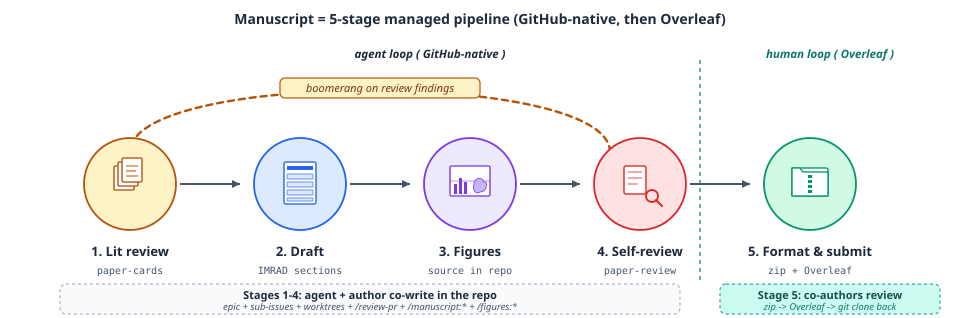
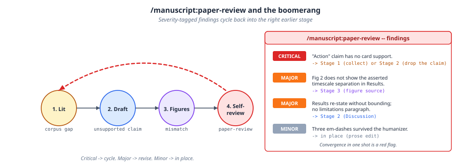
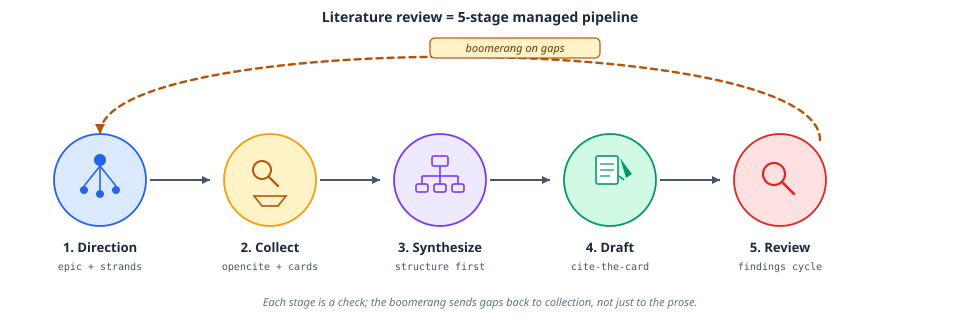
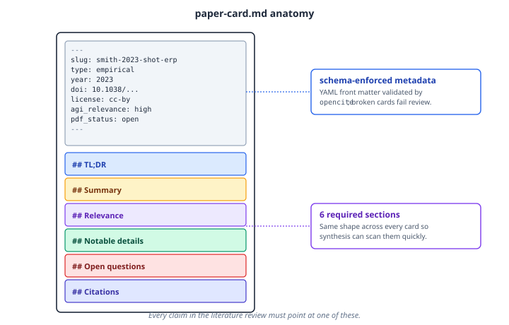

Manuscript¶
The manuscript plugin covers the full manuscript lifecycle: literature review, writing (IMRAD structure, section templates), peer review (methodology, statistics, reproducibility), journal-specific formatting, and a final humanizer pass that strips AI-writing tells.
The manuscript pipeline¶
Like the grant pipeline, a manuscript moves through five managed stages, but it crosses a loop boundary partway through: the first four stages are an agent + author co-writing loop inside the repo (GitHub-native: epics, sub-issues, worktrees, pr-review-toolkit, the manuscript:* and figures:* skills), and the last stage hands off to a human co-author review loop in Overleaf.

- Lit review: paper-cards (see below)
- Draft: IMRAD sections
- Figures: sourced in-repo
- Self-review:
paper-review - Format & submit: zip export, then Overleaf; co-authors review the Overleaf copy and changes get cloned back to the repo
As with grants, paper-review findings are severity-tagged and cycle back to a specific earlier stage rather than being patched wherever they surface:

Convergence in one review pass is treated as a red flag, not a good sign: critical findings should cycle back to collection or drafting, major findings back to figures, and only minor prose issues (like a stray em dash the humanizer missed) get edited in place.
Literature review, in two modes¶
manuscript:lit-review covers two workflows: a rigorous, citation-traceable multi-phase protocol, and an express single-pass synthesis for writing an Introduction or Background section. The multi-phase mode is itself a five-stage pipeline that can delegate its epic/sub-issue/worktree orchestration to project:epic-dev:

Every claim in a multi-phase review must trace back to a paper-card on disk: a schema-enforced markdown file with YAML front matter (slug, type, year, DOI, license, relevance, PDF status) and six required sections, validated by opencite:

The same shape across every card is what lets synthesis scan the corpus quickly instead of re-reading full papers.
Skills¶
- lit-review: both literature-review modes described above
- manuscript-writing: IMRAD structure and section templates
- paper-review: the peer-review simulation described above; thin-dispatch with a Claude-bundled fresh-context agent, a Codex agent template, and a Copilot plugin-agent template
- manuscript-formatting: journal-specific formatting (IEEE, Nature, PNAS, Elsevier, LaTeX/BibTeX management) plus revision-response templates
- humanizer: a final natural-writing pass that removes AI-writing tells while preserving meaning and discipline conventions
Try it¶
"Review this manuscript at paper.pdf as a peer reviewer"
"Format my paper for Nature Neuroscience"
"Start a multi-phase lit review on EEG-based BCIs with strands tools, data, science"
"Write a single-pass literature review on motor cortex oscillations"
Learn more¶
The Agentic Research Course week 7, "Manuscript Preparation and Peer Review," and week 5, "Literature Search and Review," cover this plugin hands-on.